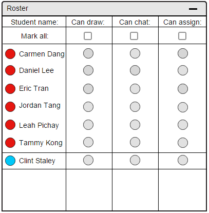
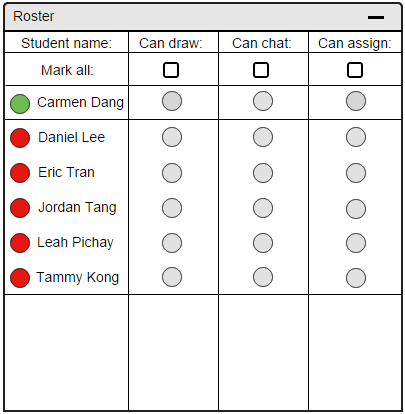
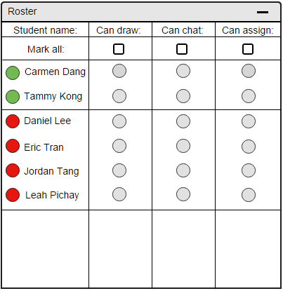

There are color bubble indicators to the left of the student's name to show the active status of a student.
A red bubble indicates that the student has not logged in yet, or is offline. Offline student names are slightly greyed out.
A green bubble on the other hand indicates that the student has checked in and is present.
A blue bubble indicates that the user in the roster is a user who remotely logged in. That user is a guest of the lecture.
A question mark indicates that the student has a question for the instructor. (See question queuing)
Student's view of the roster can be seen in here. There is no major difference, except in some administrative features being greyed out.
Figure 71 is what the instructor's roster window looks like once E-Class starts. The bubbles next to all students' names are all red indicating that no student is present.
Lecture guest Clint Staley has a blue bubble indicator to the left of his name.

Figure 71: Instructor's view of the roster initially
For the purpose of attendance, remote guests bubble indicators are always blue as long as they are present in the lecture.
If a remote user disconnects, their name is removed from the roster list. The following figures only relate to a student's attendance changing.

Figure 72: Instructor's roster as student A checks into the E-Class

Figure 73: Instructor's roster as student B checks into the E-Class